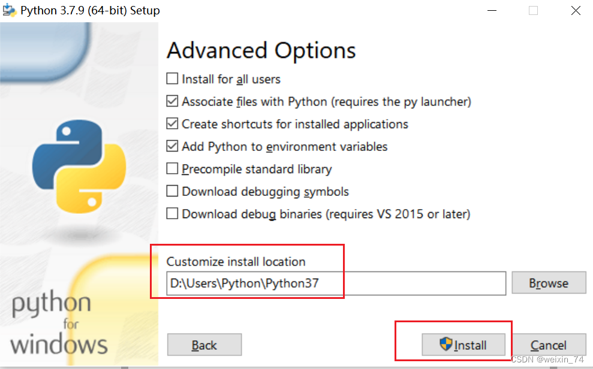
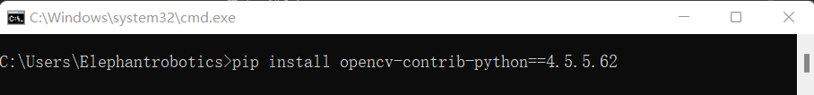
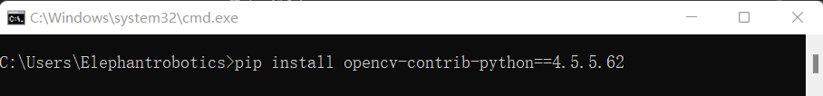

2.5D二维码分拣套件

1 套件硬件介绍
1.1 MyCobot Pro630机械臂

1.1 RealSense D435
2 realsense软件环境搭建
2.1 下载RealSense SDK 2.0
 下载完成后文件夹内有如下图所示软件，直接安装即可。
下载完成后文件夹内有如下图所示软件，直接安装即可。
2.2 测试RealSense D435
打开RealSense Viewer。

将赠送的usb3.0线连接到电脑上，一定要是usb3.0的插口！！！！如果是3.0插口和线，那么在Viewer界面左侧就如下图所示。接下来只要将Stereo Module和RGB Camera的off设置成on即可。
 将off设置成on后，就会出现如下图所示界面。测试成功后，即可以关闭该软件
将off设置成on后，就会出现如下图所示界面。测试成功后，即可以关闭该软件

3 Pyhton 环境搭建
3.1 下载python

选择你要安装的版本,推荐安装3.7以上版本


双击安装包后

保持默认配置，直接点击Next
 若选择自定义软件安装位置后，点击Install
（建议安装的文件路径是全英路径，因为有些软件安装遇到中文会打不开）
若选择自定义软件安装位置后，点击Install
（建议安装的文件路径是全英路径，因为有些软件安装遇到中文会打不开）



安装完成后，可以完毕当前页面，然后按键盘的 Windows键 + r键，并输入 cmd
 pymycobot安装
pymycobot安装
pip install pymycobot --upgrade --user

opencv安装
# 二者版本号需保持一致，这里安装4.5.5.62版本
pip install opencv-python==4.5.5.62
pip install opencv-contrib-python==4.5.5.62
 
